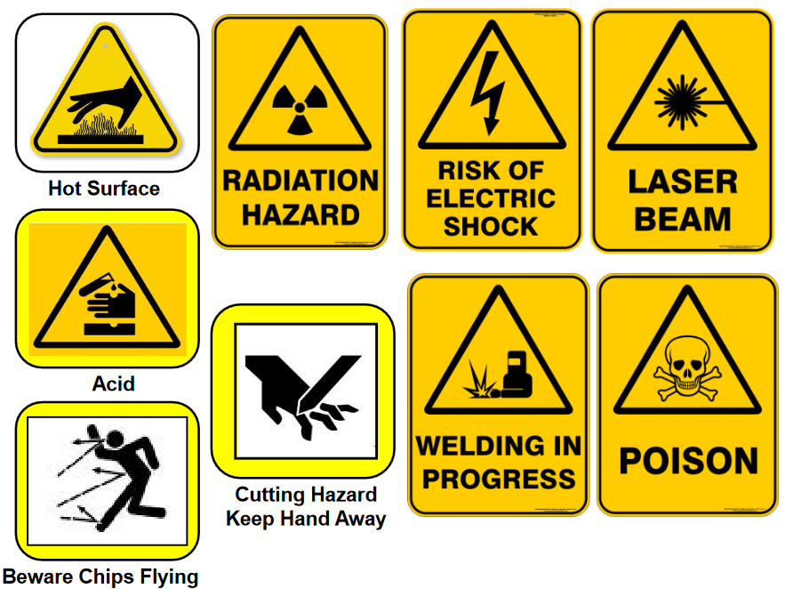
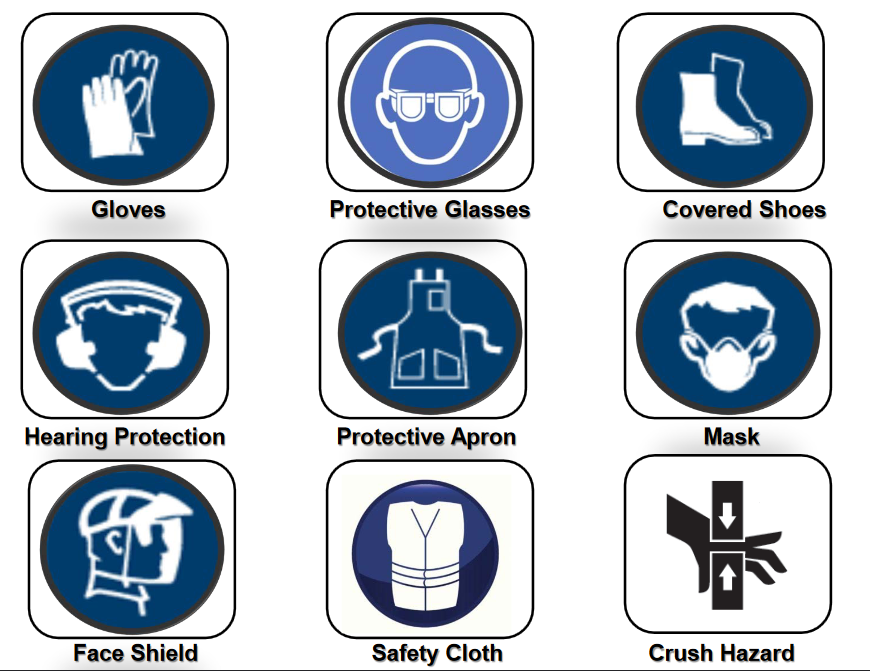
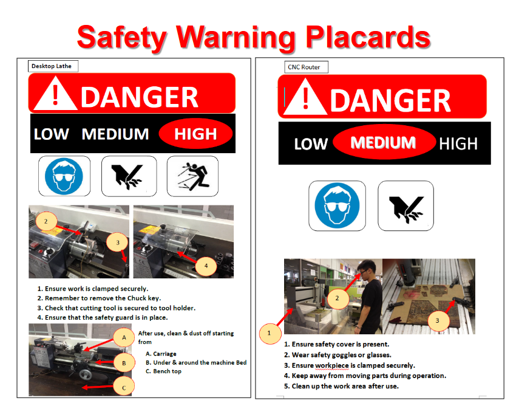

Fablab Safety
It's important to note that when using the Fablab or any workshop for that matter, safety should be your number one priority. The Fablab in particular has a number of machines that pose a significant health and safety risk. Most notably are the 3D printers and laser cutters. Thus, it is important to understand the risks associated with the various tools in the lab.
Some basic guidelines are as follows:
In case of an emergency:
You should also call the SP emergency hotline 6772 1234 to report any incidents and give the following information:
- Your name
- Your location
- The nature of your emergency
Proper attire: Below shows the proper attire for males and females respectively.



These symbols denote what potential hazards a particular tool may have

These placards denote what personal protective equipment are required to use the particular tool or machine

These denote the danger level of their respective machines
In conclusion, safety is our number one priority in the FabLab and it is important that you understand all the risks involved when using the lab and take all necessary precautions to protect yourself. Stay safe!